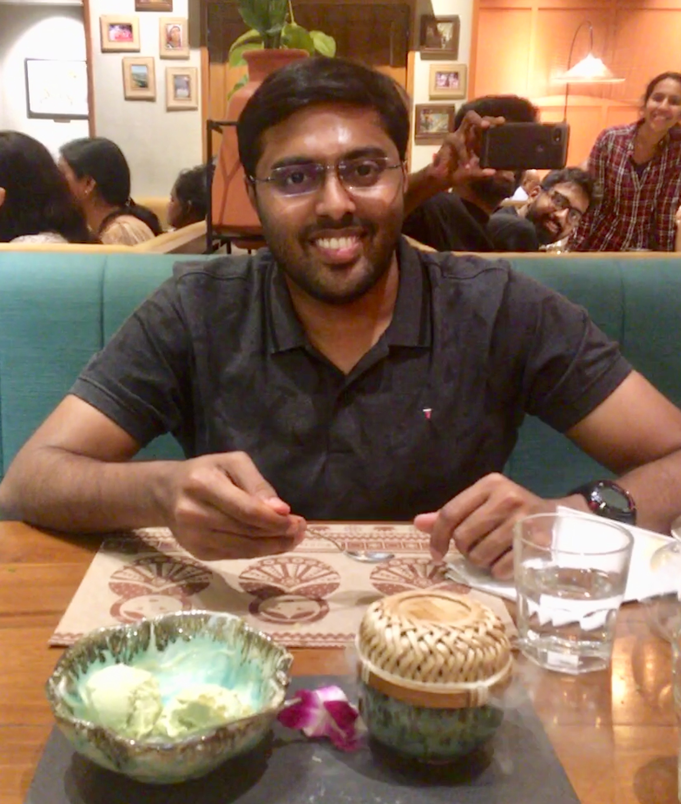

|  |
Aniruddh Rao KabbinaleSenior EngineerQualcomm India Bengaluru, Karnataka India Email: aniruddh@maargin.in Mobile: +918454992356 |
| Home | Research, Work Experience |
|
I am a former researcher at The Computer Laboratory, University of Cambridge. Currently I am with Qualcomm India as Senior Engineer, WLAN working on MAC scheduling and performance algorithms for WiFi6 chipsets. Prior to this, I was working as Lead Research Engineer at Siemens India, Bengaluru. I did my Master's in communication engineering from Department of Electrical Engineering, IIT Bombay graduating in 2016. My Research interests are towards wireless networks, Internet of Things and recently into Blockchains. |